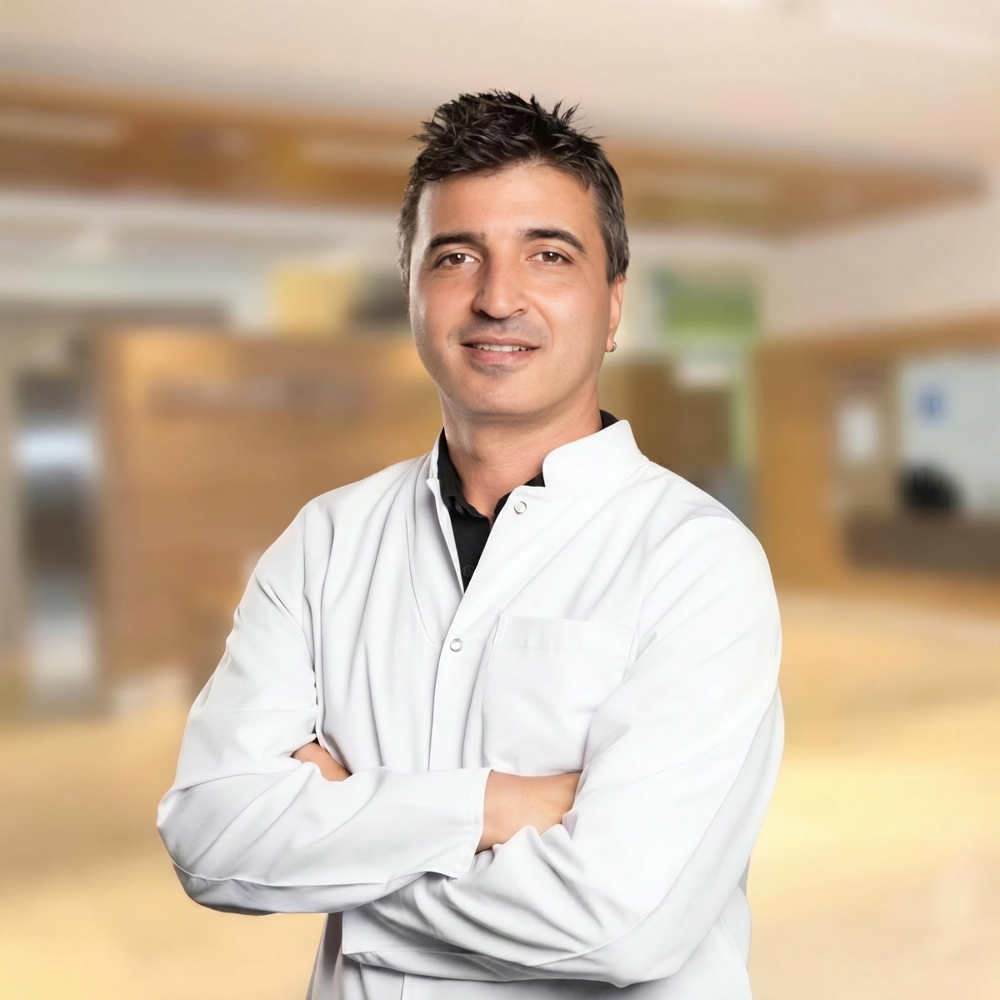

Her yüz kendi dengesini taşır. Bizim işimiz yeni bir yüz yaratmak değil — sizde zaten var olan uyumu ortaya çıkarmaktır.
Op. Dr. Mustafa Önder Uzun, burun estetiğine fonksiyonu ve doğallığı merkeze alan bir yaklaşımla; nefes alan, yüze oturan ve “ameliyatlı” görünmeyen burunlar hedefler.

Op. Dr. Mustafa Önder Uzun, tıp eğitimini 1992–1999 yılları arasında İnönü Üniversitesi Tıp Fakültesi'nde (İngilizce) tamamladı; Kulak Burun Boğaz ihtisasını 2001–2005 yılları arasında aynı fakültenin KBB Anabilim Dalı'nda yaptı.
Meslek hayatı boyunca İstanbul, Amasya, Ağrı ve Trakya'da kamu ve özel sağlık kurumlarında görev aldı; binlerce hastanın tanı, tedavi ve cerrahi sürecine eşlik etti. Bugün Özel Çorlu Vatan Hastanesi'nde hasta kabul etmektedir.
Özel ilgi alanları: burun estetiği (rinoplasti), endoskopik sinüs cerrahisi, horlama cerrahisi, timpanoplasti, ses teli mikrocerrahisi ile vertigo tanı ve tedavisi.
Açık teknik rinoplasti ile burun sırtı, burun ucu ve nefes yolları tek operasyonda ele alınır. Amaç yalnızca güzel bir burun değil; yüzün oranlarına oturan, rahat nefes alan ve yıllar içinde doğallığını koruyan bir sonuçtur. Muayenede yüz analizi yapılır, beklentiler birlikte netleştirilir ve plan tamamen kişiye özel kurgulanır.
Septum deviasyonu kaynaklı nefes darlığının cerrahi düzeltilmesi; gerektiğinde estetikle eş zamanlı.
Kronik sinüzit, polip ve tıkanıklıklarda kesisiz, kameralı ve minimal invaziv cerrahi yaklaşım.
Horlamanın kaynağına yönelik değerlendirme; yaşam kalitesini yükselten cerrahi ve medikal çözümler.
Kulak zarı onarımı ve orta kulak cerrahisi ile işitmenin korunması ve enfeksiyonların önlenmesi.
Ses kısıklığı, nodül ve poliplerde mikroskop altında hassas cerrahi; sesin doğal tınısının korunması.
Baş dönmesinde ileri tanı ve tedavi; çocuk ve erişkinlerde adenotonsillektomi ve tüp uygulamaları.
İlk görüşmede önce siz anlatırsınız. Ardından detaylı KBB muayenesi ve yüz analizi ile beklentileriniz cerrahi gerçeklikle buluşturulur.
Burun yapınız, cilt kaliteniz ve nefes fonksiyonunuz birlikte değerlendirilir; operasyon planı size özel çizilir.
Tam donanımlı hastane ortamında, güvenli anestezi eşliğinde ve planlanan milimetrik hassasiyetle gerçekleştirilir.
Kontroller düzenli aralıklarla sürer; iyileşmenin her aşamasında sorularınız için doktorunuza ulaşabilirsiniz.
Burnumdan ameliyat oldum; doktorumuz çok ilgiliydi ve mesleğinde son derece başarılı.
Ailecek çok memnun kaldık. Teşekkürler hocam.
Muayene ve burun estetiği danışmanlığı için Özel Çorlu Vatan Hastanesi'nden randevu alabilirsiniz.
0533 665 54 24 Randevu Alın